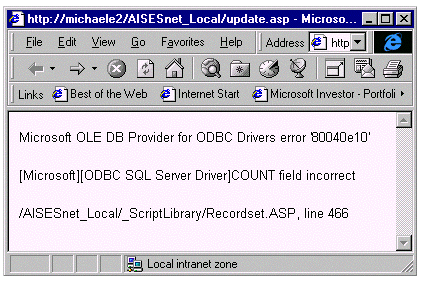

|
| ||
|
| ||
Michael D. Edwards
Software Design Engineer
Microsoft Corporation
March 11, 1999
This sample accompanies Handling and Avoiding Web Page Errors Part 2: Run Time Errors by Michael Edwards.
The first in this series of articles about Web page errors emphasized that Web page error handling isn't just good practice--it's actually a fundamental design feature of great Web sites. As such, it needs to be designed like any other feature of your site. And that means it requires combining great design ideas and user empathy with a deep technical understanding of what can go wrong. Once you know how to do it, the specific coding aspects of error handling are not all that complex. The main technical challenge is determining and prioritizing the various errors your Web page features are susceptible to. But the truly difficult piece is deciding what to do about the errors. And that's what is so cool about this sample. Sure, it shows you how to use exception-handling capabilities to intercept Web page errors. But the neat part is following the process that the Microsoft Events Web team embarked upon in their recent redesign and launch of the Microsoft Events Site  . A primary goal for their redesign was making error handling a top priority feature that they had to get right. Let's examine what they did.
. A primary goal for their redesign was making error handling a top priority feature that they had to get right. Let's examine what they did.
The Microsoft Events Web team launched a site redesign last month. The need for a redesign was driven in part by the unacceptably high volume of email from customers who were having trouble registering for events. But registration errors were only half of the problem, because the Web team was also having trouble figuring out what was going wrong. With these experiences in hand, the team set out to design a new site that would allow them to handle errors gracefully for the customer, and included mechanisms to get the information the Web team needed to troubleshoot errors. This effort involved the designers, developers, testers, and production people in all phases of the planning.
The core problem with the original Events site was the complete lack of any error handling features. This led to two more problems.
First, when script errors were encountered on their ASP pages, IIS was forced to return the error value to the customer as HTML. I'm sure you've seen this yourself; it looks something like this in Internet Explorer 4.01 SP1 and earlier:

Figure 1. Server-side script error displayed as HTML by Internet Explorer 4.01
(Note -- Internet Explorer 5 modifies this default behavior by providing a standard "Page cannot be displayed" message. Better, but still not best.)
Even if the customer can understand what they are looking at, the error message doesn't really help them accomplish the task they had in mind: getting information about a Microsoft-sponsored event. The HTML does contain error information that the Web team needs to figure out what went wrong, but the information is incomplete and it is being reported to the wrong people! Which leads to the second problem: the Web team didn't have a reliable way to capture relevant information about all the errors that users were encountering.
The obvious solution is to create custom error handlers. But as I've explained, intercepting your Web page errors is only the first step in implementing good error handling. One of the important things the Events team realized was that they were not really sure about what kind of errors their users were encountering. Of course they had some good ideas based on all that hate mail, but they were careful enough to realize that not all errors were being reported. Also, they didn't know the frequency of the various errors, and hence were not sure how to prioritize them. So they needed to build a system that was flexible enough to add additional error handling functionality both during the site's redesign and after its launch. But first, they needed the functionality for logging and analyzing all the errors that customers were getting. And they needed to get more information than just a line number and description in order to fully understand their errors. Only then could they be sure that their proposed solutions actually addressed the real problems. I'll go over more details on how they logged this additional error information in a minute, but first let's skip ahead to the bottom line.
Once you have a solid understanding of the errors your site can produce, you can build the customer-oriented part of your solution: the user's experience when encountering an error. Here you have to think carefully about what users are trying to accomplish when they encounter errors, and what, if anything, you can do to help them accomplish their goal despite the errors.
Obviously, users on the Microsoft Events Site need to get information about or register for a Microsoft-sponsored event. So the Events Web team needed solutions that allowed customers to accomplish those tasks even if they encountered an error. By analyzing the types of errors users were encountering, the Events site decided to categorize their run-time script errors into three general types. Their error handler routine could then call their error page with parameters indicating which error type was encountered. Let's examine the three buckets.
Information about Microsoft Events is stored in a SQL database, so database operations (connections, queries, etc.) permeate most of the pages. Each Microsoft Event has a home page constructed from various fields in a database record for that event. As a result of heavy server traffic, SQL time-out errors account for most of the problems users encounter. Fortunately, SQL time-outs are often self-correcting because site traffic levels can change dramatically--literally from second to second. Thus the solution the Events site uses for these types of errors is for the user to simply try the operation again after a short wait. To ease the process, the error page strives to make it super simple to retry the database operation. By calling the error page with a parameter indicating the original URL (including any appended query string) that caused the error, the HTTP <META> element can be used to automatically retry the URL thirty seconds after the original attempt (note that this works cross-browser):
<% 'FromLOC is the error producing URL + query parameter %> <META HTTP-EQUIV="Refresh" CONTENT="30; URL=<%=FromLOC%>">
In addition, the error page anticipates impatient users by offering a direct link for the retry. Here is what it looks like.
The second bucket handles situations where a SQL time-out error occurs while the user is trying to register for a Microsoft Event. In this case, in addition to the first two options for retrying the request that timed out, there is a third option to go back to the home page for the event in order to obtain information about alternative registration methods. For example, if it is possible to register by mail, fax, or phone, the event's home page will include that information. Also, event home pages include HTTP instructions to cache the page for 10 minutes in order to ensure that users will not get another error message if the server is still busy when they navigate back to the home page.
Since all other run-time script errors are not self-correcting, they result in an error page that does not allow the request to be retried (automatically or otherwise). The user experience is managed in that they are specifically told (in non-technical terms) that an error occurred from which they cannot recover.
The key feature that enables the Events site to validate their error handling design, as well as troubleshoot user errors, is that their design logs all errors received by the error-handler procedure. This is useful because it enables the development and support teams to diagnose common or recurring problems, possibly leading to new error handling treatments. For example, they could decide that certain errors currently categorized in the generic, "All Other Errors" bucket need to be handled in a different manner.
Also, you're never going to figure out how to fix your errors if you don't have a clear picture of what is going wrong on your site. While good developers will have some great input about what can go wrong with their code, the only way to know for sure whether you truly have a handle on your errors is to keep track of them. Here, the easy part is the simple logging of the errors (it's just two lines of script in error-handling procedure). The hard part is analyzing those errors. The error logging code is included in the sample code. The Microsoft Events team actually built a set ASP pages to analyze the error log, though the pages are not included in this sample code. If you'd like to get that code, let me know; if demand is great enough, I can prepare them for later release.
There are tons of comments in the source code, but here is a brief description of each file:
I'd like to thank the Microsoft Events Web team for letting me give away their code and talk about their site redesign process. If you have any trouble using this sample code please take the time to drop me a line by using the "Write Us" link on the bottom of the main page for this article.
Did you find this material useful? Gripes? Compliments? Suggestions for other articles? Write us!
© 1999 Microsoft Corporation. All rights reserved. Terms of use.